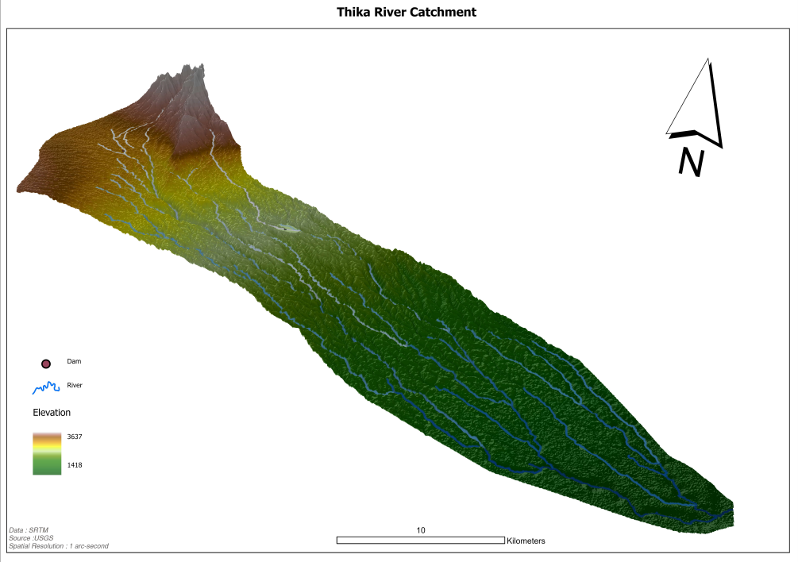
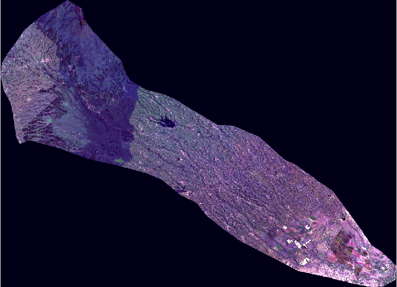
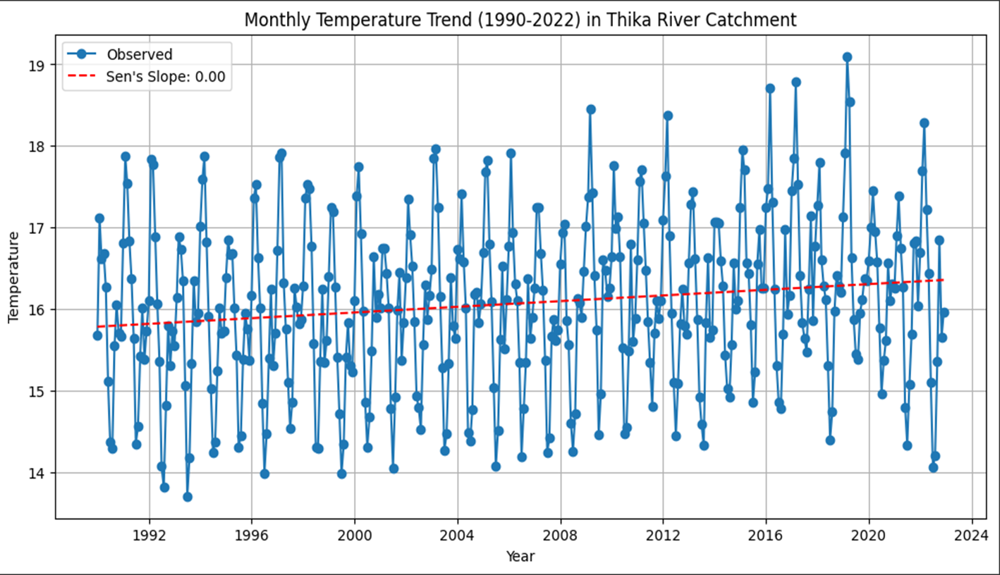
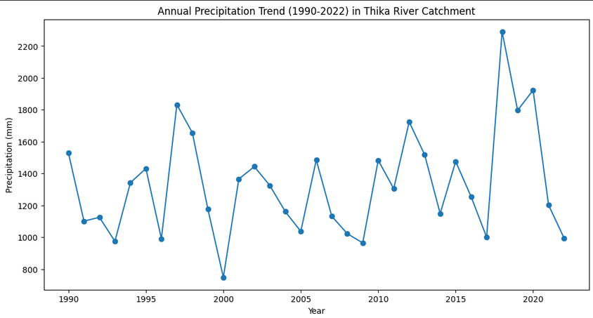

Location of Thika Catchment
Digital Elevation Model (DEM)
Elevation in Metres.
Scene of the Area
Satellite image of the Thika catchment area.
Locations of the dam and irrigation schemes
Ndakaini and Sasumua
These dams which provide water for 84% of the total population in the county's capital have been experiencing decreased water levels due to climate and sedimentation effects
Plantations
Farming practices have been affected and with the reliance on water for irrigation, downstream dams such as Masinga, responsible for HEP production has resulted to low power generation
Temperature Trends
The area has been experiencing significant rise in temperature over the past 3 decades
Rainfall Trends
Variation in rainfall patterns over the years.
Water Extents Over Time
Watch how the water extents have changed over time due to climatic effects.
Recommendations
Kenya Forest Services should increase surveillance to monitor the Forest as it is the main catchment area.
Farmers should be provided incentives for their role in conservation practices e.g not planting unfriendly tree species such as eucalyptus, which negatively affects the catchment's rivers.
The government should adopt a mitigation approach towards climate change and enforce strict regulations on greenhouse gas emissions.